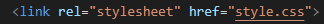
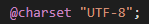

Agora vamos aprender um pouco sobre como funciona e como usamos os estilos externos do css, já que já aprendemos como usar estilos internos.
Primeiro de tudo devemos saber para que finalidade usamos os estilos externos e por quê eles são tão importantes. Bom, imagine que no seu site, você possui 30 páginas, e que nessas 30 páginas são seguidos um modelo padrão de estilo, logo, com o aprendizado obtido na parte estilos internos, sabemos que para cada página seria necessário setar todos os estilos das outras páginas para tudo ficar igual, ou até mesmo configurar o estilo apenas de uma página e depois copiar esse estilo e colar em todos os outros arquivos das outras páginas, mas acontece que essa prática é um pouco erronha.
Para consertarmos isso, podemos criar um arquivo somente para as css, o nome do arquivo pode ser qualquer um, contanto que no final tenha o ".css", exemplo: "meu-estilo.css", após criar seu arquivo de css e setar todas as configurações de estilo desejadas, basta ir em cada arquivo das páginas do site e colocar em baixo do title a tag "link: css" ao abrir a tag link css, basta procurar o link do arquivo de css na parte do "href" da tag de css. Exemplo a seguir:

Uma coisa bastante importante também é quanto ao uso de acentuações em css externo, para que não haja erros em palavras com acentuação, usa-se a regra charset, e para habilitar as acentuações sem problemas no css externo é muito simples, basta digitar: @charset "UTF-8";
OBS: Pode-se criar mais de um arquivo css para o seu site, para colocar em algumas páginas em especifico por exemplo.
OBS 2: É possível criar um style local em alguma página especifica, somente para fazer alguma configuração naquela página.
OBS 3: No mesmo arquivo é possível usar css interno, css externo e css inline! Legal né? 🙂